This document describes some of the ideas and consequences of Einstein's Theory of Special Relativity (or Special Theory of Relativity), which claims that the speed of light in a vacuum and all laws of physics (but not time and distance) are the same in all inertial frames of reference in the absence of gravity.
Special Relativity is a special case of General Relativity, where the latter adds gravity as a curvature of space and time (so frames in free fall are still considered inertial).
In this document, distance and time are measured in seconds (you might also say that distance is measured in light-seconds, because it is obtained by dividing by the speed of light c). Velocity is always relative to the velocity c, so it is unitless.
Unless otherwise stated, all statements about what observers "see", ignore the time it takes the light to travel from the observed event to the observer.
Let's assume we have two frames with the same orientation. Each has a single spatial dimension. We'll refer to one frame as the "lab frame" and the other as the "moving frame". The moving frame is moving with a constant velocity v relative to the lab frame, and v is considered positive when the movement is in the direction of plus infinity on the spatial axis of the lab frame. The time is zero in both frames, when their spatial zero locations coincide.
The Lorentz transformation gives the space-time coordinates (x,t) of an event in the lab frame as a function of the coordinates (x1,t1) of the same event in the moving frame:
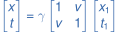where the Lorentz factor
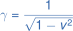is 1 for v = 0, and tends towards infinity as v tends towards ±1.
The inverse transformation is obtained by simply negating v:
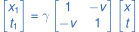Note that observers in both frames agree that the coordinates (x,t) in the lab frame and (x1,t1) in the moving frame represent the same event.
Due to the so-called time dilation, a clock at rest in the moving frame will appear to be slow to an observer at rest in the lab frame. This is seen by setting x1 = 0 in the Lorentz transformation (to represent the fixed clock location in the moving frame) and solving for t:
So, for the observer in the lab frame, 1s on the moving clock corresponds to γ seconds of his time. Hence, the clock appears to be slow.
A clock at rest in the lab frame will also appear to be slow to an observer at rest in the moving frame. This can be seen by setting x = 0 and solving for t1:
So, both observers see the other's clock as being slow.
The so-called Lorentz contraction is the spatial equivalent of the time dilation described above. A rod (of length Δx1) at rest in the moving frame will appear to be shorter to an observer at rest in the lab frame. This is seen by setting t = 0 in the Lorentz transformation (representing the instant in lab time at which the locations of the two end points of the rod are simultaneously determined) and solving for Δx:
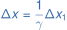The opposite is true as well: a rod at rest in the lab frame will appear to be shorter to an observer at rest in the moving frame.
Note that the concept of length only makes sense if the end point locations are determined simultaneously, and two spatially separate events, which are simultaneous in one frame, are not simultaneous in the other. So, the Lorentz contraction is actually a direct consequence of the time dilation.
If we add a second spatial dimension y, and still assume that the velocity v of the moving frame is in the direction of plus infinity on the x axis, then the Lorentz transformation becomes:
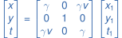This is clearly true, because obviously there will be no effect on the spatial dimension perpendicular to the direction of movement. We'll call this 3-by-3 matrix L*.
Now let's consider the more general case where v is not necessarily parallel to the x axis. We can handle this case by simply transforming the spatial coordinates to a rotated frame of reference, where v is parallel to the first spatial axis. Then we can perform the Lorentz transformation above, and finally rotate the coordinates back again.
The following transformation will convert coordinates in the rotated frame to coordinates in the actual frame:
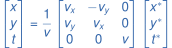We'll call this 3-by-3 matrix (including the 1/v factor) R. Note that the columns of R are simply the base vectors of the rotated frame expressed in actual coordinates; the first base vector is the v vector normalized to a length of 1, the second base vector is the same, but rotated 90 degrees, and the third base vector representing the time axis is the same as the original time vector.
The inverse matrix R-1 will rotate the other way, i.e. convert coordinates in the actual frame to coordinates in the rotated frame. It is not difficult to see that a rotation in the opposite direction is equivalent to negating vy in the matrix R (negating the angle of rotation from the x axis means negating the y coordinate), so we have:
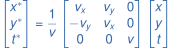where the 3-by-3 matrix (including the 1/v factor) is R-1.
We now have the three matrices we need:
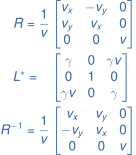The total transformation matrix L is the matrix product of these:
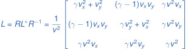So, the Lorentz transformation for arbitrary v≠0 in a 2-dimensional space is:
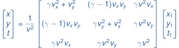Note that this won't work for v=0, because our rotation matrix R becomes undefined when v has no direction. However, we already know the solution to this special case: it is simply the identity transformation (x,y,t) = (x1,y1,t1).
A space-time diagram shows the lab time t vs. the lab location x. In this diagram we can also draw the t1 and x1 axes of a frame moving with velocity v relative to the lab frame. The lines representing the t1 and x1 axes can be found by setting x1 = 0 and t1 = 0, respectively, in the Lorentz transformation. Thus, we find that the lines x = vt and t = vx represent the t1 and x1 axes, respectively (see example in Figure 1).
In a similar way, we can find the lines representing t1 = ..., -2s, -1s, 1s, 2s, ..., and x1 = ..., -2s, -1s, 1s, 2s, ... It turns out that all the t1 = n lines are parallel, and all the x1 = n lines are parallel. Here's a summary of the characteristics of these lines:
t1 = n lines (where n is an integer number of seconds):
x1 = n lines (where n is an integer number of seconds):
Figure 1: Space-time diagram (v=0.5)
The area of one of the unit parallelograms in the (x1,t1) coordinate system is always 1s2 (this area is equal to the determinant of the x1 and t1 unit vectors, which according to the information above are (γ, γv) and (γv, γ), respectively).
From the above we can make the following observations about how the axes of the moving frame appear in the space-time diagram:
Note that light (in a vacuum) always travels along a 45° line towards the upper right or upper left corner (corresponding to v=±1) in all frames.
A clock at rest at x1 = 0 in the moving frame will be moving up the t1 axis in the space-time diagram as time passes (i.e. the t1 axis is the clock's "world line" - the path it follows through space and time). An observer at rest at x = 0 in the lab frame will be moving up the t axis as time passes (i.e. the t axis is the observer's world line). From the observer's point of view, the clock and he will be on the same horizontal line in the diagram at any given moment (because this line represents the current lab time).
If both the observer and the clock start out at t = t1 = 0, then they will be at the positions indicated in Figure 2 after 1s of the clock's time. The clock will of course have moved one unit up the t1 axis (because this is 1s of its time) corresponding to the lab coordinates (γv,γ) determined previously during the construction of the space-time diagram. The observer will be on the same horizontal line, so his lab coordinates will be (0,γ). This shows us that 1s of the clock's time corresponds to γ seconds of the observer's time - in accordance with the time dilation formula derived in section #!
Figure 2: Time dilation seen from lab frame
(black eye is observer in lab frame, blue circle is clock in moving frame)
Now, let's swap the observer and the clock and see how this looks in the space-time diagram. The clock is now at rest in the lab frame and moving up the t axis, while the observer is moving up the t1 axis. From the observer's point of view, the clock and he will be on the same line parallel to the x1 axis at any given moment (because this line represents the current time in the moving frame).
Again, the observer and the clock start out at t = t1 = 0, but this time they end up at the new positions indicated in Figure 3 after 1s of the clock's time. The clock will have moved one unit up the t axis, and the observer will have moved more than one unit (γ seconds) up the t1 axis in order to remain at the same t1 time as the clock (i.e. to remain on the same line parallel to the x1 axis). So, again the observer sees the predicted time dilation.
Figure 3: Time dilation seen from moving frame
(blue eye is observer in moving frame, black circle is clock in lab frame)
Let's consider a rod at rest in the moving frame with one end point at xa1 = 0 and the other at xb1 = 1s. As time passes, the first end point will move up the t1 axis, and the second end-point will move up a line parallel to the t1 axis. These two lines (dashed red in Figure 4) are the world lines of the end points (i.e. the "tracks" of the end-points as these move through space and time).
At any given moment, an observer in the moving frame will measure the spatial distance between the two end points along a line parallel to the x1 axis (e.g. the green rod in Figure 4), because such a line represents simultaneity in the moving frame. Thus, this observer will see a rod length of xb1-xa1 = 1s.
Figure 4: Length of moving rod measured in moving frame
(green rod indicates moment of measurement)
Figure 5: Length of moving rod measured in lab frame
(green rod indicates moment of measurement)
An observer at rest in the lab frame, however, will measure the spatial distance between the two end points along a line parallel to the x axis (e.g. the green rod in Figure 5), because that is what he understands to be a simultaneous measurement of the two end point locations. So, he will see a shorter rod (of length 1s/γ, to be exact).
Note that in the situations shown in Figure 4 and Figure 5, the two observers agree that they are determining the location of the leftmost end point of the rod at the same moment (because this end-point happens to have the same coordinates in both figures), although their clocks do not show the same time at that moment. The observers also agree that they are not determining the location of the rightmost end point at the same moment. Each observer believes that he is determining the location of both end points simultaneously, and that the other observer is not doing so, so he does not find it surprising that the other observer comes up with a different length.
The Lorentz transformation (see section #) tells us that the time in the moving frame at lab coordinates (x,t) is:
This means that an observer in the lab frame will see the time in the moving frame at a fixed lab location (e.g. x = 0) as being faster by a factor of γ than his own time. In section # we determined that he will see the time at a fixed location in the moving frame as being slower by a factor of γ than his own time. In other words, if he observes a row of clocks at rest and synchronized in the moving frame, and shifts his attention from clock to clock as each of them passes him, their time will appear to be faster than his (e.g. the vertical instances of clocks B, C, and D in Figure 6 show times -2s, 0s, and 2s when they pass lab location x=0 at lab times -1.73s, 0s, and 1.73s, respectively), but if he only looks at a single clock all the time, then its time will be slower than his (as illustrated in Figure 2 in section #).
Figure 6: Row of moving clocks seen from lab frame
(blue circles are clocks, dashed red lines are their world lines)
The reason for this apparent paradox is that the moving clocks - due to their spatial separation - show different times in the lab frame, even though they are perfectly synchronized in the moving frame. If we fix the lab time t in the formula above, we see that at any given lab moment (t), the leading clock (with largest x if v>0) will show the earliest time, and each successive clock will show later and later times (e.g. the horizontal instances of clocks A, B, and C in Figure 6 show times -1s, -0.5s, and 0s, respectively, when they are observed simultaneously in the lab frame at lab time t=0s). The difference between the times shown on two clocks is equal to their lab distance multiplied by their velocity multiplied by γ.
The above observations help explain the well-known twin paradox, which asks what happens if one twin travels out into space and back again (with the dashed red world line in Figure 7), while the other twin remains at home (with the black t axis as world line). Since the twins are moving relative to each other, each twin should see the other one ageing more slowly than himself due to time dilation. So, when the traveling twin returns home, the two would supposedly disagree about which one is now the youngest. This is the paradox.
However, if we place synchronized clocks throughout the lab frame and let the traveling twin shift his attention from clock to clock as he passes them, then it is clear from our previous observations that he will see the lab time on these clocks as being faster than his own time, even though each individual clock (as well as the clock at home) will be ticking slower than his. Since the traveling twin sees the lab time at his own location to be consistently faster throughout his travel, he will not be surprised to find that the other twin is older than himself when he returns home. So, the twins agree that the one at home is the oldest.
But what if the traveling twin keeps his attention on the clock at home? Due to time dilation that clock will appear to be ticking slower during the outbound journey (where the blue coordinate system in Figure 7 represents the moving frame) - and also slower during the homebound journey (where the green coordinate system in Figure 7 represents the moving frame). So how does the twin at home end up being older? As previously shown, the clocks ahead of the traveling twin in his direction of movement will show later and later times, so when he reverses his direction of travel to move homeward, the clocks he passed on his outbound journey (including the one at home) will immediately jump from an earlier to a later time in order to fulfill the requirement that clocks ahead of him show later and later times (the clock at home jumps from the lower to the upper black circle in Figure 7). In other words, the twin at home will appear to age very fast during the short period of time while the traveling twin is reversing his direction of movement. Thus, there is no paradox.
Figure 7: Traveling twin's world line (dashed red) in lab frame.
Twin at home appears to age instantaneously from lower to upper black circle
Note that if the traveling twin were initially approaching the twin at home (along the green t'1 axis in Figure 7), and then reversed his direction to move away (along the blue t1 axis), he would see the twin at home jump back in time (from the upper to the lower black circle).
As demonstrated earlier, the measured time and distance between two events depends on the observer's velocity relative to the events. However, the so-called "space-time interval" (Δs)2 between two events is independent of the observer (i.e. universally invariant) and is determined as follows for 1 and 3 spatial dimensions, respectively:
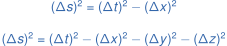There are 3 cases:
For one event to be the cause of another, the space-time interval between them must be timelike or lightlike (and the time difference must be non-negative).
An acceleration is defined as constant if co-moving observers see it as constant, i.e. if the instantaneous acceleration is the same in all inertial frames at the moment when the accelerating object is at rest in each of these frames.
The world line (in an inertial frame with a single spatial dimension) of an object with the constant acceleration a0 is a hyperbola described by the following equation:
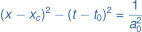where t0 is the time at which the object is at rest in the inertial frame, and xc is the x-coordinate where the hyperbola's 2 asymptotes intersect (see Figure 8). The distance from xc to x(t0) (i.e. the distance between the 2 black dots in Figure 8) is 1/a0. The left and right branches of the hyperbola correspond to a negative and positive a0, respectively.
Figure 8: World lines (dashed red) of objects with constant acceleration a0=1s-1 (right) and a0=-1s-1 (left), both with (xc,t0)=(0,0)
Note that this constant acceleration hyperbola consists of all the space-time points whose "proper distance" to (xc,t0) is 1/a0 (see section #).
As stated in section #, the Lorentz factor γ becomes infinite as the velocity v approaches 1 (the speed of light), so this is an upper limit on v, which cannot be exceeded. How does this affect space travel?
Well, if an observer in the lab frame determines the traveler's velocity v by measuring the traveled (lab frame) distance and dividing that by the (lab frame) duration of the travel, then it is true that this velocity v has an upper limit of 1. So, from the point of view of the observer in the lab frame, the traveler cannot travel faster than light.
Likewise, if the traveler himself determines his own velocity v by measuring the relative movement of some reference point at rest in the lab frame, and he makes sure that both distance and time are measured in his own moving frame, then this velocity will be the same as the one determined by the observer in the lab frame, and it will also have an upper limit of 1. So, if the traveler defines his velocity as the velocity at which objects at rest in the lab frame move past him, then also he will agree that he cannot travel faster than light.
However, one might argue that a different definition of velocity would be more appropriate for the traveler. A traveler going from location A to B (both locations being at rest in the lab frame) will probably be more interested in knowing how long (measured in his own time) it will take him to travel the (lab frame) distance from A to B. So he might define his effective velocity as the traveled lab frame distance divided by the duration of the travel measured in his own time. Using the Lorentz transformation, we find that the relationship between this effective velocity veff and the real velocity v is given by:
There is clearly no theoretical upper bound on veff, and it becomes greater than 1 ("faster than light") when v is greater than 1/√2 (approx. 71% of the speed of light). This means that a traveler can in fact (theoretically) travel as far as he wants in as short time as he wants. To him it appears that the Lorentz contraction is reducing the distance he has to travel, so he can do it in a shorter time without exceeding the speed of light.
The disadvantage of traveling with a high veff is that the lab time (at the traveler's moving location) will speed up as demonstrated in section #, so the interesting distant star that was the target of the travel, might be long gone when the traveler gets there an hour later, and the folks at home will be long dead when he returns after another hour of his own time.